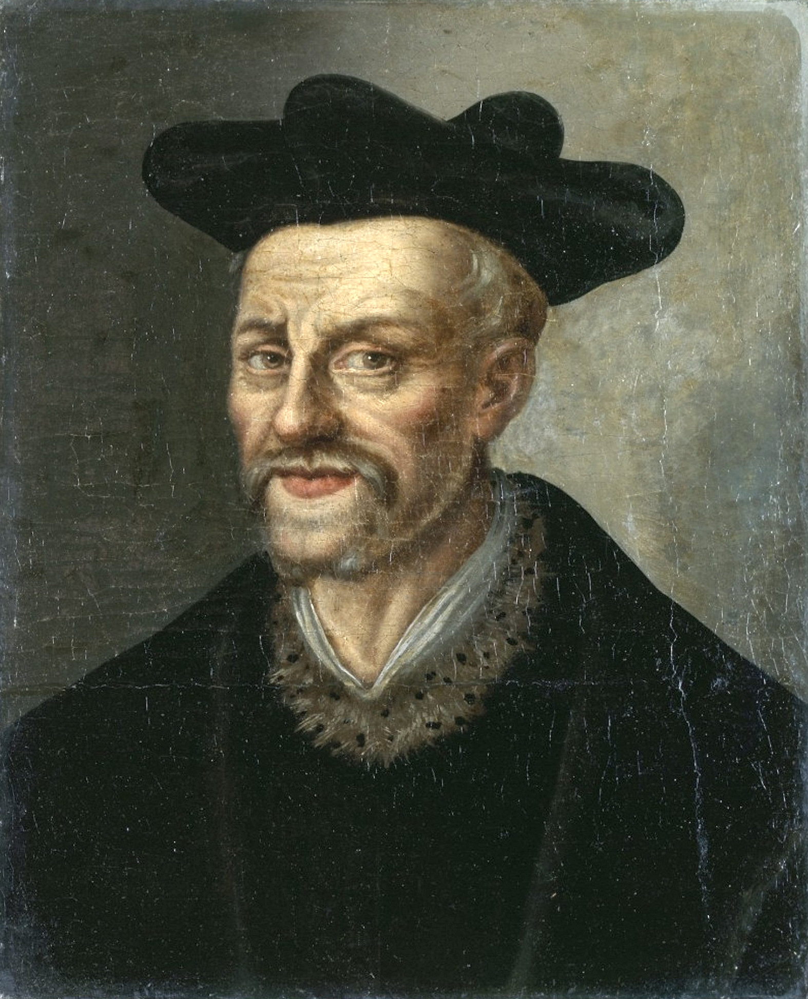

Gargântua e Pantagruel
A vida de Gargântua e de Pantagruel é uma pentalogia de romances escrita no século XVI por François Rabelais, que fala das aventuras de dois gigantes, Gargântua e seu filho Pantagruel. O texto é escrito numa veia humorosa, extravagante e satírica, e apresenta muita crueza, humor negro e violência (listas de insultos explícitos ou vulgares preenchem vários capítulos).
François Rabelais
François Rabelais (1494-1553) foi escritor, padre e médico francês do Renascimento. Ficou para a posteridade como o autor das obras-primas cômicas Pantagruel e Gargântua, que exploravam lendas populares, farsas, romances, bem como obras clássicas. O escatologismo foi usado para condenação humorística. A exuberância da sua criatividade, do seu colorido e da sua variedade literária asseguraram a sua popularidade.